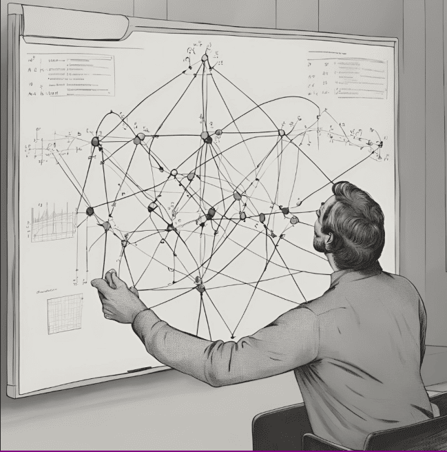

8. Conclusión
La teoría de gráficas es un campo esencial en matemáticas y ciencias de la computación, que permite modelar y analizar sistemas complejos mediante la representación de elementos y sus relaciones. A través de conceptos básicos como vértices, aristas y distintos tipos de grafos, se facilita el estudio de estructuras interconectadas en áreas tan diversas como la ingeniería, redes de comunicación, biología, economía y logística.
La manipulación de gráficas, incluyendo técnicas como recorridos y algoritmos de optimización, permite resolver problemas prácticos, como la búsqueda de rutas óptimas o la detección de patrones en redes sociales. Además, las representaciones de grafos mediante matrices y listas de adyacencia ofrecen herramientas versátiles para analizar su estructura de manera eficiente según el tipo de conexiones.
En conclusión, el dominio y conocimiento de la teoría de gráficas y sus métodos de manipulación es crucial para abordar problemas complejos en los que la interrelación entre elementos desempeña un rol fundamental.
